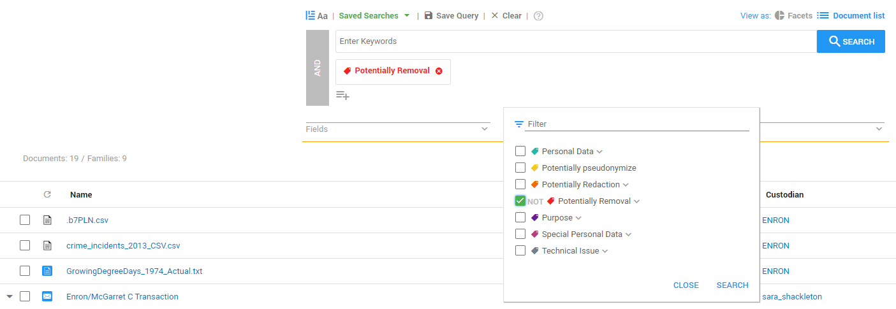
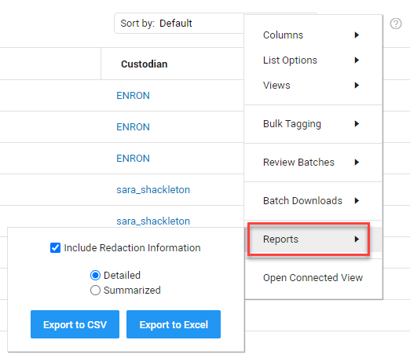

.png)
Instead of producing the documents directly, it is also possible to produce a report of the documents. These reports contain information about the documents, such as where the document is located, on which server it is located, the email ID associated with the document, and much more. Producing reports is also of importance when it comes to deleting data in ZyLAB ONE. Since not every user has been assigned with the same rights by the administrator, it can be of use to report the documents that need to be deleted and then forward the report to the authorized personnel that can delete the documents, like the IT department.
In order to produce a report, the user first has to select the desired documents that should be produced into a report. If the user wishes to report documents that should be later deleted by the authorized personnel, it is common to apply the Potentially Removal Tag to the documents that should be deleted. After applying the tag, the documents can then be found in the Document List page, by selecting the Potentially Removal tag beneath the search box and clicking Search. This action ensures that only documents that have been assigned with the Potentially Removal tag, will be shown in the Document List page.

Now, the user can press the settings icon, and select the Reports option.
Here the user can decide whether the report should be exported as an Excel or a CSV file. The user can also select
the option whether or not the report should include information about the redactions inside the documents.

Next, the user can open the Excel or CSV file.
We recommend changing the format of the columns in Excel to AutoFit Column Width make is more readable.